Sobre Nós
Sobre Nós
Nossa missão: "Prestar amplo serviço em Nefrologia com competência médica e ética sendo reconhecido como referência pela qualidade oferecida e valorização da vida através do tratamento humanizado e individualizado."
Nossa visão: "Ser referência em qualidade no atendimento ao paciente com insuficiência renal em seus diversos estágios é a nossa visão."
Nossos valores: "VER (V.E.R.) - Valorização da Vida, Ética e Responsabilidade."
A hemodiálise é o principal tratamento clínico de terapia renal substitutiva para pacientes com Doença Renal Crônica em último estágio e pode garantir sobrevida às pessoas. Há um aumento anual e crescente do número de pacientes renais crônicos que necessitam de hemodiálise e a quantidade de unidades de diálise no país não acompanha esse crescimento, o que apresenta a necessidade da criação de novos centros de diálise.
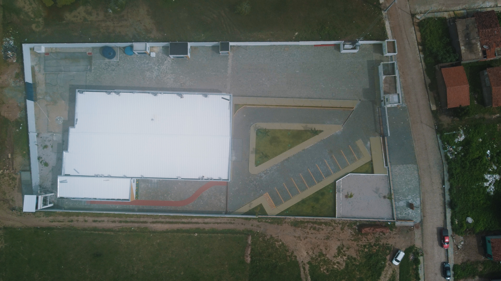A Clínica de Hemodiálise Sarah Bezerra visa um conceito de atendimento e excelência no tratamento renal através da hemodiálise. Promovendo a saúde do paciente renal através de 50 máquinas de última geração, a clínica oferece atendimento diário para 150 pacientes, além de acolher 150 acompanhantes.
Com mais de 50 profissionais de saúde, incluindo médicos, auxiliares de enfermagem, enfermeiros e demais colaboradores, a clínica está preparada para proporcionar um atendimento humanizado e de qualidade. A instalação da clínica na cidade de São José da Tapera/AL visa reduzir a necessidade de deslocamento dos pacientes e contribuir para o desenvolvimento econômico-social da região.
 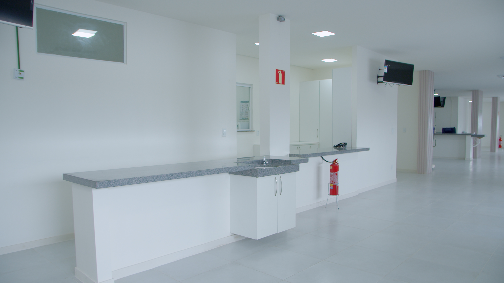
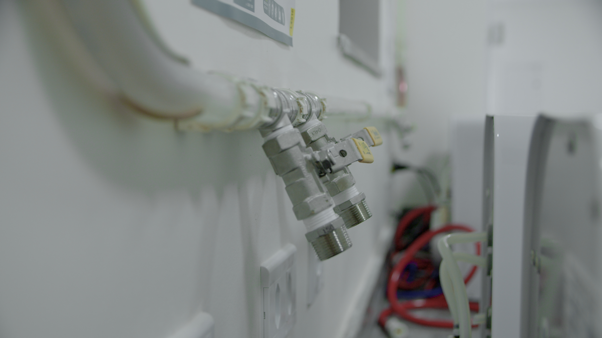
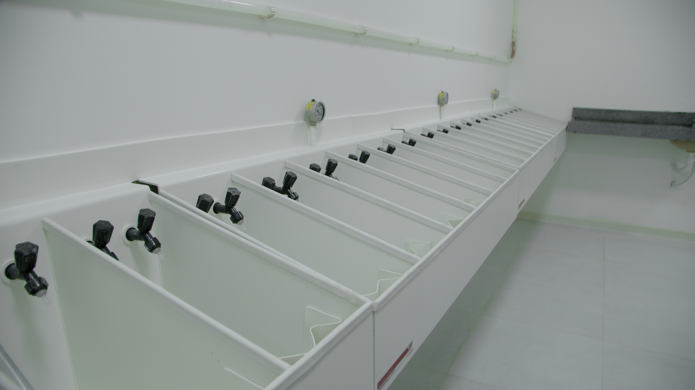
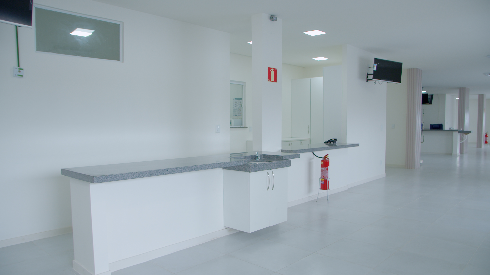
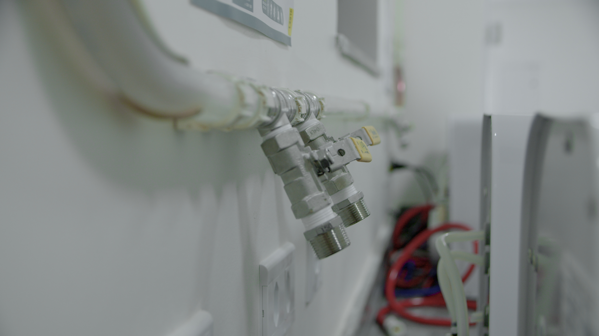
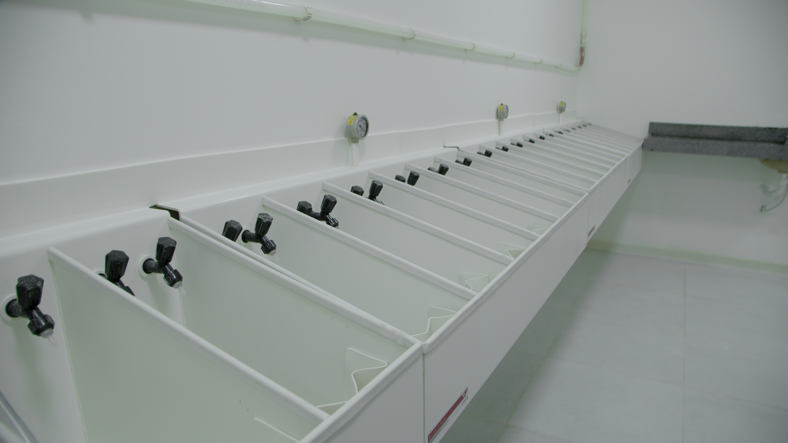

 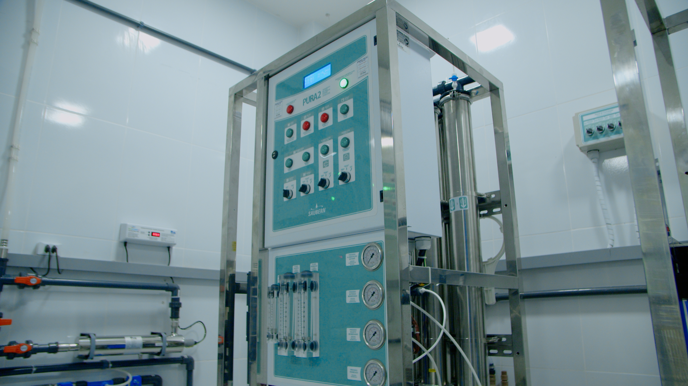
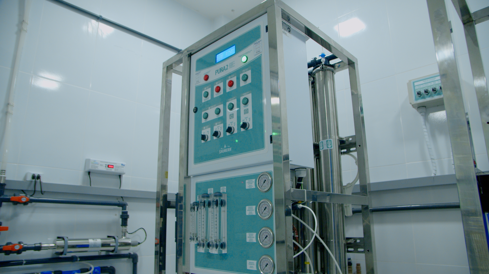
 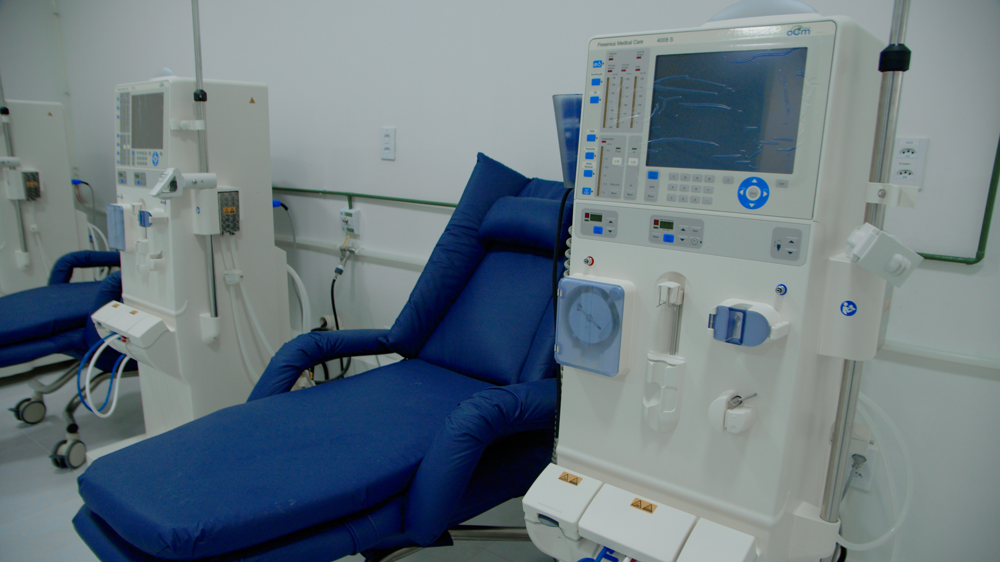
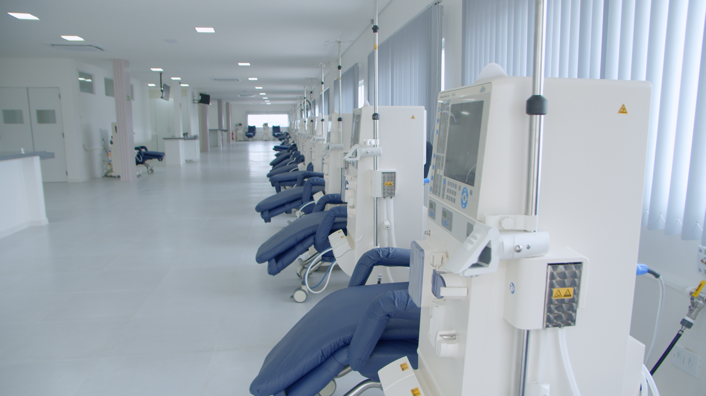
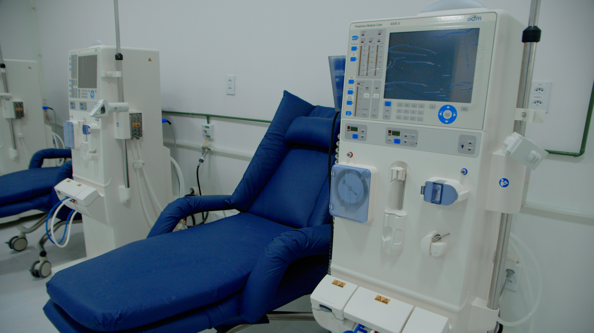
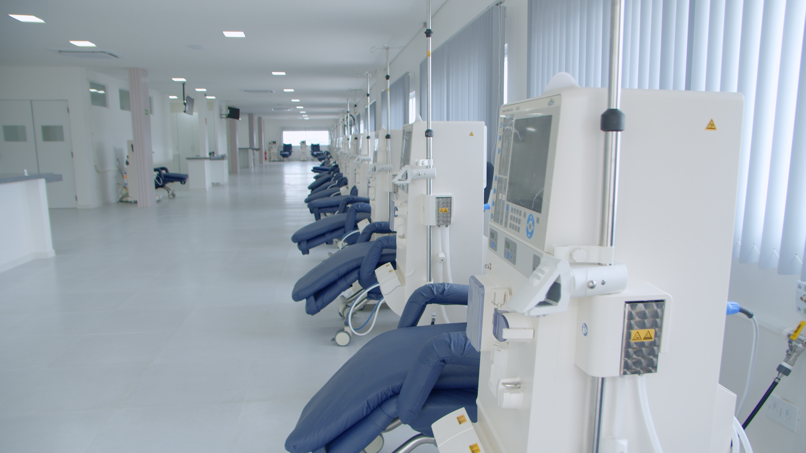